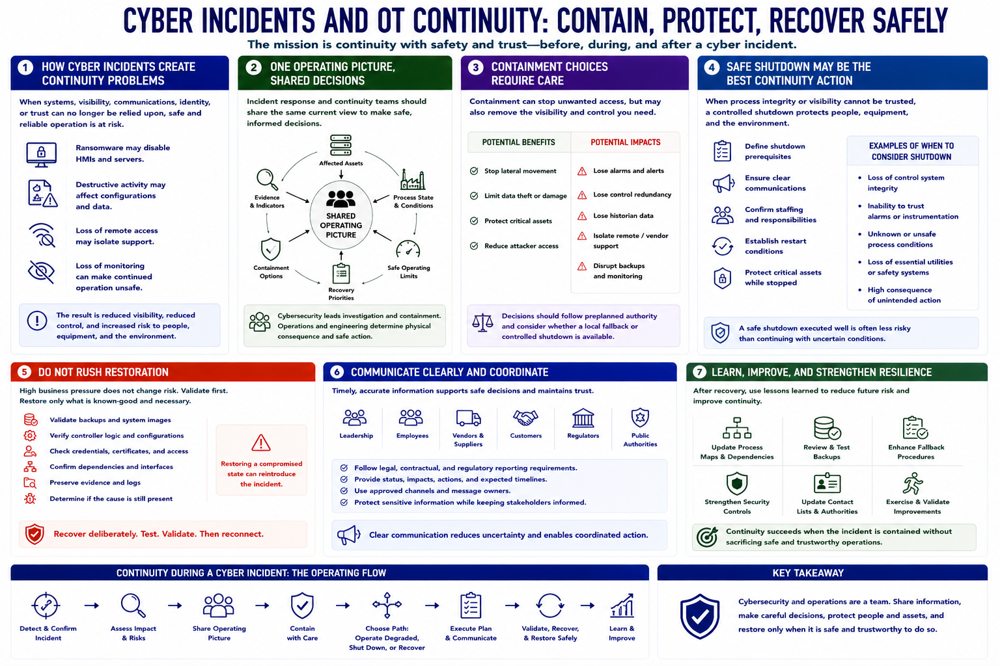

Continuity During Cyber Incidents
Connecting to LMS... Progress: in progress

Narration
Cyber incidents create continuity problems when systems, visibility, communications, identity, or trust can no longer be relied upon. Ransomware may disable HMIs and servers. Destructive activity may affect configurations. Loss of remote access may isolate support, while loss of monitoring can make continued operation unsafe.
Incident response and continuity teams should share one operating picture: affected assets, process state, safe operating limits, evidence, containment options, and recovery priorities. Cybersecurity leads investigation; operations and engineering determine physical consequence and safe action.
Containment choices require care. Disconnecting a network path may stop unwanted access but also remove alarms, control, redundancy, or historian data. Decisions should follow preplanned authority and consider whether a local fallback or controlled shutdown is available.
A safe shutdown may be the best continuity action when process integrity or visibility cannot be trusted. Plans should define shutdown prerequisites, communications, staffing, restart conditions, and the assets that must remain protected while production is stopped.
Do not rush restoration because business pressure is high. Validate backups, images, controller logic, configurations, credentials, and dependencies before reconnecting. Preserve evidence and determine whether the cause remains present. Recovery from a compromised state can reintroduce the incident.
Communicate clearly with leadership, employees, vendors, customers, regulators, and public authorities as required. After recovery, update process maps, backups, fallback procedures, security controls, and exercises. Continuity succeeds when the incident is contained without sacrificing safe and trustworthy operations.